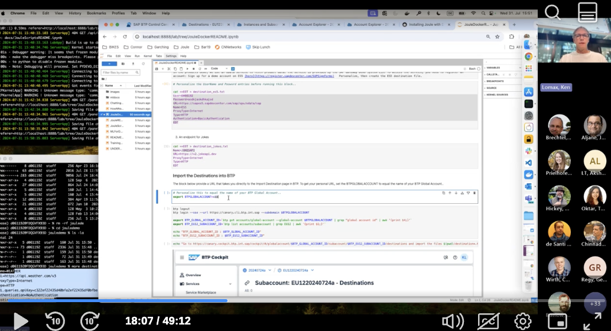
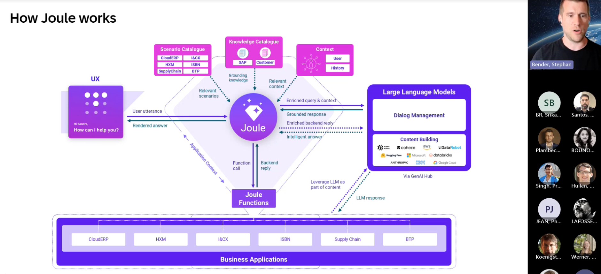
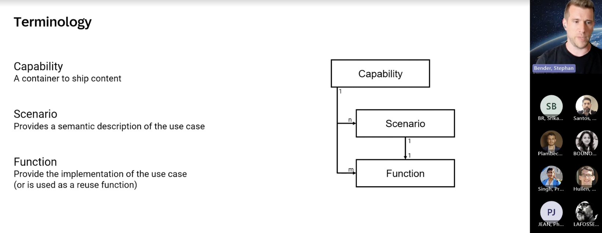
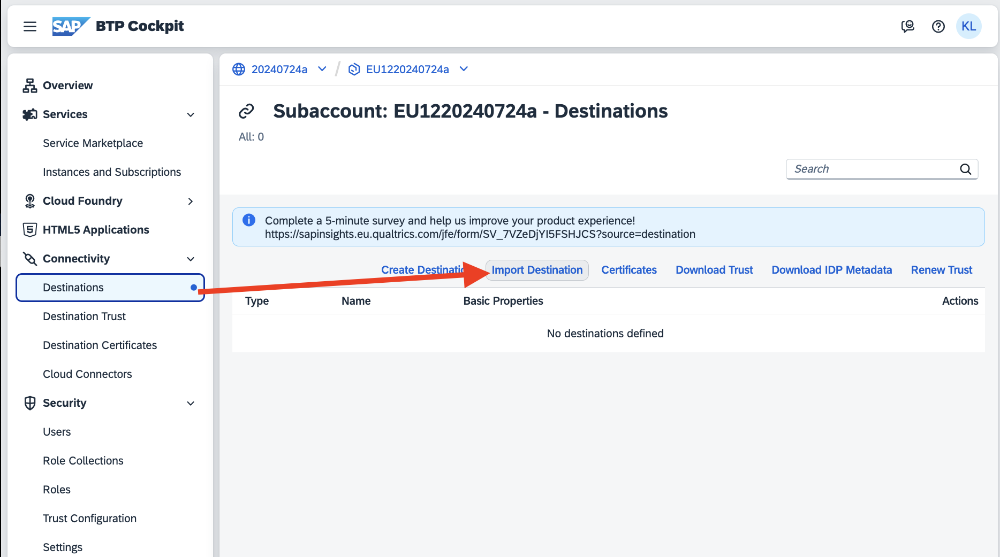

On github @ Github Docu
Joule - installation with Docker and initial use cases
A step-by-step guide to
- install Joule on BTP with Docker in ~6 minutes
- deploy the Joule examples github.tools.sap/DAS-Samples/joule-functions-example.git
- dig deeper into the Joule code
Related Links
- A Video of me (Ken Lomax) going through this journey is here

- A Video describing Joule Functions, from Joule Architect Stephan Bender is here
- Github with Joule code is here
- SAP Digital Assistant
- Workzone page
- Hands-on
- Joule@Stack
Necessary Prerequisites:
You have:
- docker installed
- created a global account in Canary - Public Cloud Feature Set B as shown in this 1 minute video
- It is important you choose the same options as shown in that video.
- The name of the account should have letters and numbers only (no '-' '_' etc)
To run this journey yourself in Jupyter..
- install Jupyter
- install Jupyter bash kernel (so you can select the bash kernel in Jupyter)
- git clone https://github.tools.sap/D061192/hackathonnotebooks.git
- jupyter lab hackathonnotebooks/docs/JouleDockerREADME.ipynb
- Select the bash kernel within Jupyter, then follow the journey :)
Joule installation with Docker
Personalize BTPGLOBALACCOUNT and BTP_MY_EMAIL in the following command, then run it directly on your laptop (not in Jupyter)
docker run -it --rm -e BTPGLOBALACCOUNT=20240731b -e BTP_MY_EMAIL=ken.lomax@sap.com kenlomax/aiwarmup_toinstalljouleonbtp:v5
- You can watch the progress in the terminal, and also in the BTP cockpit.
- If there are errors/infinite waits, it is best to delete both subaccounts in your global account, and try again.
- If the installation runs without errors, it should end with the line "joule login ..." that you should copy and run in the next step..
Background


Log into Joule...
Copy and run the "joule login ..." command printed at the end of the docker output, directly in a laptop terminal.
Confirm you are logged into joule
joule status
Define 3 Destinations for our Joule examples, in your BTP Subaccount
1) An endpoint for Weather
mkdir ~/jouledemo
pushd ~/jouledemo
pwd
cat <<eot> destination_weather.txt
Name=WEATHER
URL=https://api.weather.com/v3
ProxyType=Internet
Type=HTTP
URL.queries.apiKey=c322ef22435d40bfa2ef22435df0bfbe
Authentication=NoAuthentication
EOT
2) An endpoint for Products In the products demo, we use an OData service to fetch product data. The service is provided by the SAP Gateway Demo System ES5. To access the service, you need to register an account: Sign up for a demo account on ES5 here Personalize, then create the ES5 destination file.
# Personalize the UserName and Pasword entries before running this block..
cat <<eot> destination_es5.txt
User=D066192
Password=asdkjaskdhkajsd
URL=https://sapes5.sapdevcenter.com/sap/opu/odata/sap
Name=ES5
ProxyType=Internet
Type=HTTP
Authentication=BasicAuthentication
EOT
3) An endpoint for Jokes
cat <<eot> destination_jokes.txt
Name=JOKESAPI
URL=https://v2.jokeapi.dev
ProxyType=Internet
Type=HTTP
EOT
Import the Destinations into BTP
The block below provide a URL that takes you directly to the Import Destination page in BTP. To get your personal URL, set the BTPGLOBALACCOUNT to equal the name of your BTP Global Account..
# Personalize this to equal the name of your BTP Global Account..
export BTPGLOBALACCOUNT=20240731b
btp logout
btp login --sso --url https://canary.cli.btp.int.sap --subdomain $BTPGLOBALACCOUNT
export BTP_GLOBAL_ACCOUNT_ID=`btp get accounts/global-account --global-account $BTPGLOBALACCOUNT | grep "global account id" | awk '{print $4;}'`
export BTP_EU12_SUBACCOUNT_ID=`btp list accounts/subaccount | grep EU12 | awk '{print $1;}'`
echo "BTP_GLOBAL_ACCOUNT_ID : $BTP_GLOBAL_ACCOUNT_ID"
echo "BTP_EU12_SUBACCOUNT_ID : $BTP_EU12_SUBACCOUNT_ID"
echo "Go to https://canary.cockpit.btp.int.sap/cockpit/#/globalaccount/$BTP_GLOBAL_ACCOUNT_ID/subaccount/$BTP_EU12_SUBACCOUNT_ID/destinations and import the files $(pwd)/destination*.txt"

Clone the joule demo repo
Create a github token at https://github.tools.sap/settings/tokens with repo rights and export to MY_GITHUB_TOKEN:
#export MY_GITHUB_TOKEN=your_github_token_with_repo_right
export MY_GITHUB_TOKEN=xx
Clone the Joule examples
git clone https://$MY_GITHUB_TOKEN@github.tools.sap/DAS-Samples/joule-functions-example.git
pushd joule-functions-example/capabilities
pwd
mkdir -p greetings/functions
mkdir -p greetings/scenarios
cat <<eot> greetings/scenarios/send_greetings.yaml
description: This function greets the user and includes the town in the greeting
slots:
- name: name
description: The name of the person to be greeted
- name: town
description: The town where the person lives
target:
type: function
name: send_greetings
EOT
cat <<eot> greetings/functions/send_greetings.yaml
parameters:
- name: name
optional: false
- name: town
optional: false
action_groups:
- condition: true
actions:
- type: message
message:
type: text
content: "Greetings <? name ?> from <? town ?> 31 July!"
EOT
cat <<eot> greetings/capability.sapdas.yaml
schema_version: 3.3.0
metadata:
namespace: com.sap.das.demo
name: greetings_capability
version: 1.0.0
display_name: "Greetings Capability"
description: This capability sends greetings.
EOT
mkdir -p gday/functions
mkdir -p gday/scenarios
cat <<eot> gday/scenarios/gday_scenario.yaml
description: This function sends casual salutations to the user
slots:
- name: name
description: The name of the person to be greeted
- name: place
description: The place where the person lives
target:
type: function
name: gday_fn
response_context:
- value: name
description: the name of the user
- value: place
description: the place the user is located
- value: answer
description: the answer to show the user
EOT
cat <<eot> gday/functions/gday_fn.yaml
parameters:
- name: name
optional: false
- name: place
optional: false
action_groups:
- actions:
- type: api-request
method: GET
system_alias: JokesService
path: /joke/Any?safe-mode
result_variable: joke_result
# - type: message
# message:
# type: text
# content: "Gday gday!! <? name ?> from <? place ?>.. I say I say I say.. <? joke_result.body.type == 'single' ? joke_result.body.joke : joke_result.body.setup + ' '+ joke_result.body.delivery ?>"
- type: set-variables
scripting_type: spel
variables:
- name: answer
value: "I say I say I say.. <? joke_result.body.type == 'single' ? joke_result.body.joke : joke_result.body.setup + ' '+ joke_result.body.delivery ?>"
result:
name: <? name ?>
place: <? place ?>
answer: <? answer ?>
EOT
cat <<eot> gday/capability.sapdas.yaml
schema_version: 3.3.0
metadata:
namespace: com.sap.das.demo
name: gday_capability
version: 1.0.0
display_name: "Gday Capability"
description: This capability sends gday message.
system_aliases:
JokesService:
destination: JOKESAPI
EOT
# When you compile an application, specify which scenarios it will have..
cat <<eot> da.sapdas.yaml
schema_version: 1.0.0
capabilities:
- type: local
folder: ./greetings
- type: local
folder: ./gday
- type: local
folder: ./weather
- type: local
folder: ./products
EOT
Deploy the Joule examples
#joule list
#pwd
joule deploy -c -n "demo"
#joule list
Try some example joule dialogs from the command line:
#joule dialog demo "how is it in Paris today?"
# joule dialog demo "and how about in Munich?"
joule dialog demo "Send casual salutations to Ken from Crowthorne"
joule dialog demo "I love barry manilow"
Launch Joule:
Run the following command and follow this path to reach your joule app..

joule launch demo
Activate debug mode..
Now that you have created(activated?) your Joule user account, you can pimp it with debugging rights..
# Extract the user ID of your custom identity provider
btp list security/user --of-idp sap.custom --subaccount $BTP_EU12_SUBACCOUNT_ID | head -2 | tail -1
export BTP_EU12_IDP_USER_ID=`btp list security/user --of-idp sap.custom --subaccount $BTP_EU12_SUBACCOUNT_ID | head -2 | tail -1`
echo "BTP_EU12_IDP_USER_ID is:" $BTP_EU12_IDP_USER_ID
# Assign our role-collection to our IAS user
btp assign security/role-collection joulesuperpowers --to-user $BTP_EU12_IDP_USER_ID --of-idp sap.custom --subaccount $BTP_EU12_SUBACCOUNT_ID
Launch Joule in debug mode
Launch Joule again (possibly in incognito mode to avoid cookie messiness)
Widen the UI (to be sure all buttons are shown) and you should then see a debug button in the joule client window
joule launch demo
## Try it out
Explore the scenarios and "talk" with them via Joules..
For example:
Search products
Notebooks
Notebook 1
or:
How is the weather in Munich
And how about in London?
or:
Send greetings to Bob
or:
Send casual salutations to Bob from Boston
Testing
As per current Docu: "Please be aware that the current implementation of the Cucumber/Gherkin test framework is not yet fully working with the generated LLM responses in the new Joule architecture. Support for this is planned for the future, therefore we skip explaining tests here in these tutorials."
Next steps:
- Try the Joule IDE plugin @ https://help.sap.com/docs/joule/service-guide/joule-ide-extension?locale=en-US
- Joule docu: https://wiki.one.int.sap/wiki/display/OPECFKM/Joule
- Using Joule's Web Client is described here: https://github.tools.sap/DAS/webclient
Further examples:
- Errors during installation -> https://itsm.services.sap/sp?id=sc_category
- Study the Joule tutorial in more depth here
- Video demoing how to create an initial Joules and Chuck Norris chat
- Video demoing how to add a Weather Capability by Timothy Jannsen and Nathan Droba and setup
- HackAiThon PoC from Team Mind Flayers @
- Using
- Destination
- URL=https\://backoffice.xxxx.model-t.myhybris.cloud/odata2webservices
- Name=D43_COMMERCE
- ProxyType=Internet
- Type=HTTP
- Authentication=BasicAuthentication
- User=admin
- https://wiki.one.int.sap/wiki/display/prodandtech/AI+Talk%3A+Building+a+CX+Integration+Assistant+with+Joule
- https://wiki.one.int.sap/wiki/display/prodandtech/HackAIthon+PoC+from+Team+Mind+Flayers
- This journey was constructed by following various documents from [here](https://help.sap.com/docs/joule/service-guide/initial-set-up?
Joules FAQ Forum:
- Questions on Joule: ask questions on stackenterprise, and add a joule tag: https://sap.stackenterprise.co/ locale=en-US)